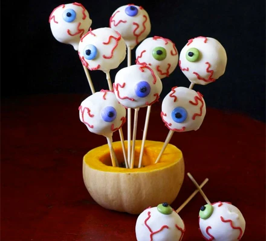

Halloween Cake Pops

Description
These are eyeball chocolate cake pops
Ingredients
- 100g/4oz madeira cake
- 100g chocolate sandwich cookies
- 100g melted bar milk chocolate
- 200g melted bar white chocolate
- few sugar-coated chocolate beans and icing pens, to decorate
- 10 wooden skewers
- ½ small pumpkin or butternut squash , deseeded, to stand pops in
Steps
- Break the Madeira cake and cookies into the bowl of a food processor, pour in the melted milk chocolate and whizz to combine.
- Tip the mixture into a bowl, then use your hands to roll into about 10 walnut-sized balls. Chill for 2 hrs until really firm.
- Push a skewer into each ball, then carefully spoon the white chocolate over the cake balls to completely cover. Stand the cake pops in the pumpkin, then press a chocolate bean onto the surface while wet. Chill again until the chocolate has set. Before serving, using the icing pens, add a pupil to each chocolate bean and wiggly red veins to the eyeballs.
Home